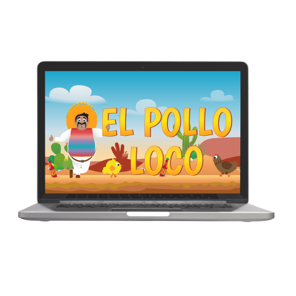

Portfolio

This page is a sample of my work - please feel free to try them out.
This page is a sample of my work - please feel free to try them out.

|
Join
JavaScript | HTML | CSS
Task manager inspired by the Kanban System. Create and organize tasks
using drag and drop functions, assign users and categories.
|
|
El Pollo Loco
JavaScript | HTML | CSS
Jump, run and throw game based on object-oriented approach. Help Pepe
to find coins and tabasco salsa to fight against the crazy hen.
|
 |